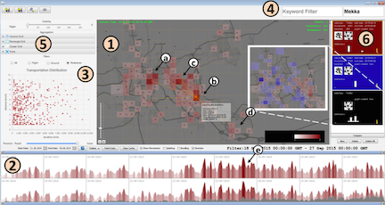

简介:
孙国道，浙江工业大学计算机科学与技术学院副教授，博士生导师。2016年获工学博士学位，博士求学期间前往香港科技大学(2013.02-2013.07)、微软亚洲研究院(2013.07-2015.01)、德国斯图加特大学(2015.07-2015.12)等高校和研究机构展开访问和交流。主要从事大数据挖掘、可视化和可视分析方面的研究，在可视化领域相关期刊和会议发表论文20余篇，包括IEEE TVCG、IEEE VIS、IEEE TMM、ACM TIST等，并担任IEEE VIS、IEEE Pacific VIS、VINCI、ChinaVis等国际学术会议的程序委员会委员和多个国内外著名期刊和会议的审稿人，主持国家自然科学基金面上项目、青年基金、浙江省自然科学基金一般项目、浙江省重点研发课题等项目，作为项目骨干参与国家重点研发计划、国家自然科学基金重点项目等，荣获浙江省科技进步一等奖(多源异构时空定位数据的关联分析平台及应用)。近年来毕业/指导硕士研究生20余人，学生获国家研究生奖学金、学科竞赛全国奖等，已指导毕业的研究生、本科生就职于国内知名公司如阿里巴巴、海康威视、华为、滴滴出行等。
部分论文:
|
EvoSets: Tracking the Sensitivity of Dimensionality Reduction Results Across Subspaces
IEEE Transactions on Big Data, to appear, 2021
|
|
|
A Survey on Automatic Infographics and Visualization Recommendations (入选VI 2020精选文章)
Visual Informatics, 4(3):24–40, 2020
|
|
|
PermVizor: Visual Analysis of Multivariate Permutations
(ChinaVis 2019 最佳论文提名奖)
Journal of Visualization, 22(6):1225–1240, 2019
|
|
|
TZVis: Visual Analysis of Bicycle Data for Traffic Zone Division
Journal of Visualization, 22(6):1193–1208, 2019
|
|
 |
SocialWave: Visual Analysis of Spatio-temporal Diffusion of Information on Social Media
ACM Transactions on Intelligent Systems and Technology, 9(2):1–23, 2017
|
|
StreamExplorer: A Multi-Stage System for Visually Exploring Events in Social Streams
IEEE Transactions on Visualization and Computer Graphics, 24(10):2758–2772, 2018 (CCF-A 类期刊)
|
|
|
Embedding Spatio-temporal Information into Maps by Route-Zooming
IEEE Transactions on Visualization and Computer Graphics, 23(5):1506-1519, 2017 (CCF-A 类期刊)
|
|
|
Looking into saliency model via space-time visualization
IEEE Transactions on Multimedia, 18(11):2271-2281, 2016 (CCF-B 类期刊)
|
|
|  |
TravelDiff: Visual Comparison Analytics for Massive Movement Patterns Derived from Twitter
IEEE Pacific Visualization Symposium, pages 176–183, 2016 (CCF-C 类会议)
|
|
EvoRiver: Visual Analysis of Topic Coopetition on Social Media
IEEE Transactions on Visualization and Computer Graphics, 20(12):1753-1762, 2014 (CCF-A 类期刊)
|
|
 |
Embedding Temporal Display into Maps for
Occlusion-Free Visualization of Spatio-temporal
Data
IEEE Pacific Visualization Symposium, pages 185-192, 2014 (CCF-C 类会议)
|
 |
A Survey of Visual Analytics Techniques and
Applications: State-of-the-Art Research and
Future Challenges
Journal of Computer Science and Technology,
28(5):852-867, 2013 (CCF-B 类期刊)
|
 |
A Web-based Visual Analytics System for Real
Estate Data
SCIENCE CHINA Information Sciences, 56(5):1-13,
2013 (CCF-B 类期刊)
|
代表性科研项目:
- 主持：
- 面向大规模短文本数据的时空语义理解和可视分析方法研究，国家自然科学基金项目面上项目，2020.01-2023.12
- 智能家居系统解决方案研究及应用示范, 浙江省重点研发计划课题，2018.09-2020.12
- 多模态视频语义数据的可视分析，浙江省高校基本科研业务费项目（青年科学家专项），2020.01-2023.12
- 移动社交媒体时空流数据的可视分析方法研究，国家自然科学基金项目青年基金项目，2017.01.-2019.12
- 面向深度神经网络的差异化可视分析和理解方法研究，浙江省自然科学基金项目一般项目，2019.01-2021.12
- 杭州市出租车大数据营运特征计算，杭州市综合交通信息中心，2018.09-2019.12
- 基于时空语义信息的网络信息流可视挖掘方法研究，公安部重点实验室开放课题，2016.10-2018.10，2018.09-2019.12
- 杭州市虚拟现实产业（AR/VR）发展现状及提升对策研究，杭州市科技发展计划项目，2017.10-2017.12
- 参与：
- 制造企业数据空间设计理论与方法，国家重点研发计划，2020.11-2023.11，校内第二
- 面向跨设备多场景视频理解的可视分析技术研究，国家自然科学基金重点项目，2021.01-2025.12，校内第二
- 基于大数据的智能交通诱导系统的研制，科技部中小企业中欧国际合作项目，2015.01-2016.12.31
- 车辆GPS大数据的处理及可视分析方法研究，浙江省杰出青年科学基金，2014.1-2017.12
科研获奖、学术任职和邀请报告等:
-
科研获奖
- 浙江省科技进步奖一等奖，多源异构时空定位数据的关联分析平台及应用(5/11), 2019
- ChinaVis 2019 最佳论文提名奖, PermVizor: Visual Analysis of Multivariate Permutations, 2019
-
学术任职
- ChinaVis 2017-2021 论文速览环节主席
- IEEE VIS 2019-2021(Short Paper) 程序委员会委员
- PacificVis 2018 程序委员会委员
- PacificVis 2017 程序委员会委员
- VINCI'14, VINCI'15, and ChinaVis 等程序委员会委员
- 国际期刊和会议评审: IEEE TVCG/TMM, ACM TIST/TiiS, JOV, JVLC, IEEE Vis, IEEE PVis, VINCI, ChinaVis等
-
邀请报告
- 中国图象图形学会可视化与可视分析专委会走进高校@湖北大学，时空语义数据的可视分析，2021.04
- ChinaVis专题报告, 城市数据的时空语义信息挖掘和可视分析, 2019.07
- 华东师范大学报告, 社交媒体数据的可视分析, 2017.11
- 浙江大学暑期学校授课, Visual analysis of urban data, Hangzhou, China, 2017.07
- ACM SIGGRAPH Asia (IEEE TVCG Invited Session on Visualization), Embedding Spatio-temporal Information into Maps by Route-Zooming, 2016.11
- ChinaVis专题报告, 青年可视化学者成长之路, 2017.07